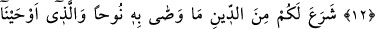
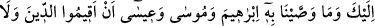
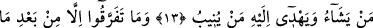
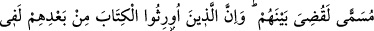
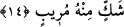

DÎNİ AYAKTA TUTUN!
AYRILIĞA DÜŞMEYİN!
10. Ayrılığa düştüğünüz herhangi bir şeyde hüküm vermek, Allah’a mahsustur.
İşte, bu Allah, benim Rabbimdir. O’na dayandım ve O’na yönelirim.
11. O, gökleri ve yeri yoktan yaratandır. Size kendinizden eşler, hayvanlardan da
(kendilerine) eşler yaratmıştır. Bu sûretle çoğalmanızı sağlamıştır. O’nun benzeri
hiçbir şey yoktur. O işitendir, görendir.
12. Göklerin ve yerin anahtarları O’nundur. Dilediğine rızkı bol verir,
dilediğinden de kısar. O, her şeyi bilendir.
13. “Dini ayakta tutun ve onda ayrılığa düşmeyin” diye Nuh’a tavsiye ettiğini,
sana vahyettiğimizi, İbrahim’e, Mûsâ’ya ve Îsâ’ya tavsiye ettiğimizi Allah size de
din kıldı. Fakat kendilerini çağırdığın bu (din), Allah’a ortak koşanlara ağır geldi.
Allah dilediğini kendisine (peygamber) seçer ve kendisine yöneleni de doğru yola
iletir.
14. Onlar kendilerine ilim geldikten sonra, sadece aralarındaki çekememezlik
yüzünden ayrılığa düştüler. Eğer belli bir süreye kadar Rabbinden bir (erteleme)
sözü geçmiş olmasaydı, aralarında hemen hüküm verilirdi. Onlardan sonra kitaba
vâris kılınanlar da onun hakkında derin bir şüphe içindedirler.